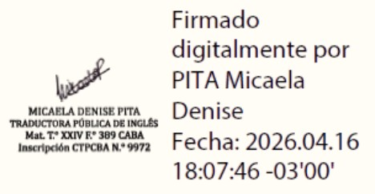
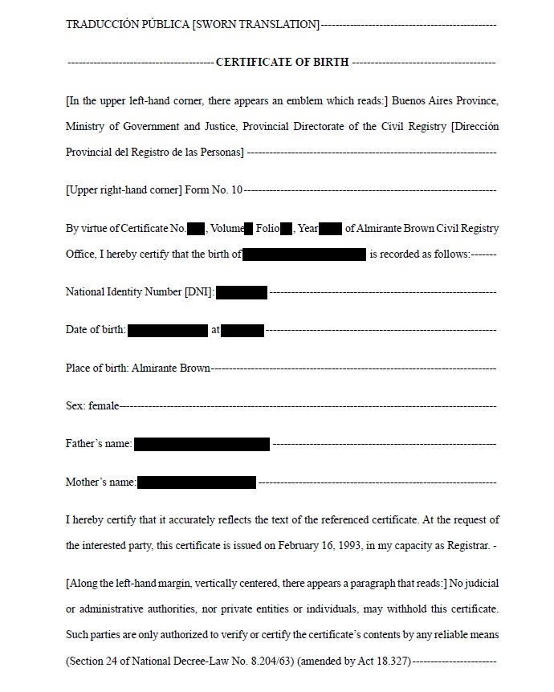

Traductora Pública de inglés
Traductora Pública especializada en derecho, medicina y farmacéutica.
Sobre la traductora
Traductora Pública especializada en traducción jurídica, médica y farmacéutica.
Con más de cuatro años de experiencia en Life Sciences, ofrezco traducciones precisas, claras y legalmente válidas, tanto de inglés a español como de español a inglés. Cuento con formación y experiencia en inteligencia artificial, validación lingüística y traducción médica, disciplinas que exigen dominio del sector y manejo preciso de su terminología.
Soy egresada de la UBA y estoy matriculada en el CTPCBA y CTPBA, lo que respalda la validez legal de mis traducciones públicas.
Cómo puedo ayudarte
Traducciones con validez legal inmediata, firmadas y selladas bajo mi matrícula del CTPCBA (CABA) o CTPBA (Prov. Bs. As). Ideales para trámites, presentaciones oficiales y documentación sensible..
Traducción especializada para el sector médico y farmacéutico. Precisión terminológica, experiencia en CROs y manejo de documentación clínica y regulatoria.
Adaptación lingüística y cultural para que tu contenido funcione en el mercado correcto y conecte con el público adecuado.
Revisión profesional para garantizar textos claros, coherentes y listos para publicar o presentar.
Optimización de traducciones generadas por IA.
Validación de documentación clínica y cuestionarios siguiendo estándares internacionales. Trabajo alineado con prácticas de la industria.
Ofrezco traducciones públicas en formato digital, con firma digital vigente del CTPCBA (Matrícula N.º 9972) y con validez legal para trámites y presentaciones oficiales.

Areas de especialización
Experiencia en la traducción de contenido médico y farmacéutico: presentaciones, Clinical Trial Agreements, artículos científicos y documentación clínica. Manejo sólido de terminología regulatoria y estándares del sector.
Amplia trayectoria en la traducción de documentación personal (partidas de nacimiento, matrimonio, defunción), resoluciones judiciales, contratos, declaraciones juradas, acuerdos de confidencialidad y artículos. Dominio de terminología jurídica argentina e internacional.
Experiencia en CROs como CTA y Contract Specialist, con exposición directa a procesos clínicos y regulatorios. Formación en Validación Lingüística, Traducción de Protocolos y Traducción Farmacéutica.
Portfolio

“Es de destacar que según se desprende del art. 273 del ordenamiento ritual, la procedencia del recurso de reposición en segunda instancia se circunscribe al interpuesto respecto de providencias simples, esto es, las firmadas por el juez que preside la Sala, de lo que se deriva que las emitidas por la totalidad de los integrantes del Tribunal no pueden ser impugnadas mediante dicho recurso."
"It shall be noted that as arises from section 273 of the Code of Procedure, a motion for reconsideration in the appeal stage can only be filed against decisions inherent to the process, i.e. those signed by the chief justice of the panel. As can be inferred from the foregoing, decisions issued by all members of the Court cannot be contested by filing a motion for reconsideration. "
Coronavirus: Why politics means success or failure in South America
Its President, Jair Bolsonaro, is a man who has made light of the virus from the very start. He's called it the sniffles and seldom paid tribute to the nearly 70,000 people who have died. He has disagreed with his own health ministry over the importance of social distancing, he has argued with state governors who introduced quarantine measures and he has pushed to re-open the economy at the earliest opportunity. than a year, locked down swiftly when the virus hit.
Coronavirus: La razón por la cual las políticas adoptadas implican el éxito o el fracaso en Sudamérica
Jair Bolsonaro no solamente dijo que el coronavirus era un simple resfrío sino que además rara vez rindió homenaje a las 70.000 personas fallecidas. Bolsonaro disintió de imponer medidas de distanciamiento social sugeridas con su propio ministro de salud. También discrepó con muchos gobernadores que impusieron medidas de cuarentena. Al contrario, Bolsonaro insistió en reabrir la economía lo antes posible.
C. Study Drug. Company agrees that it will provide Group (indirectly through NCI) with the quantities of the Company's investigational drug product entinostat and placebo (the "Study Drug") required to conduct the Study in accordance with the Protocol, at no charge.
Group shall use, and will ensure that Study Personnel (as defined in Section 4.D) use, the Study Drug solely for purposes of the Study in accordance with the Protocol. In handling, storing and using Study Drug, Group members will comply with all applicable laws and any written instructions provided by Company.
C. Medicamento en Estudio. La Sociedad acuerda suministrar al Grupo (de forma indirecta, a través del Instituto Nacional del Cáncer, NCI por sus siglas en inglés) sin costo alguno la cantidad necesaria del fármaco en etapa de investigación Entinostat y placebo (el "Medicamento en Estudio") para la realización del Estudio conforme al Protocolo.
El Grupo utilizará, y se asegurará de que el Personal del Estudio (definido en la Sección 4.D) utilice el Medicamento en Estudio con el fin exclusivo de realizar el Estudio en conformidad con el Protocolo.
3. El empleador reconoce que debe mantener absoluta reserva de la información mencionada ya sea total o parcial constituye una condición esencial para su relación laboral actual y futura con el EMPLEADOR, conforme a las disposiciones legales aplicables.
4. En virtud de lo expuesto, el EMPLEADOR se obliga a utilizar toda la información a la que tenga acceso por su relación laboral y similar como también a mantener estricta reserva de toda información secreta de propiedad del EMPLEADOR de sus CLIENTES y/o terceros.
3. The EMPLOYEE represents that he knows that maintaining absolute reserve with regard to the above information and/or any portion thereof constitutes an essential condition to its present and future labor relationship with the EMPLOYER, in compliance with the applicable legal provision.
4. On account of the foregoing, the EMPLOYEE undertakes to use all the information he may have access to only within the scope of his labor relationship and for the furtherance thereof, and to hold in strict confidentiality any secret information belonging to the EMPLOYER, the EMPLOYER's CUSTOMERS and/or any third parties.
Servicio integral de transcripción, traducción y localización de un informe de Telemundo sobre política migratoria y protestas en Chicago. Incluye transcripción palabra por palabra, identificación de OST y notas editoriales para garantizar una adaptación fiel y profesional.
| Marcas de tiempo | Transcripción (ES) | Tranducción (IN) | OST |
|---|---|---|---|
| 0:00–0:01 | "Buenos días. Hoy es viernes 24 de octubre." | "Good morning. Today is Friday, October 24." | Tear Gas and Violence / Immigration |
| 0:01 | "Y estas son las noticias más importantes. Ahora, gas lacrimógeno y violencia. Se agravan las tensiones en Chicago." | "And these are the most important news. Now, tear gas and violence. Tensions in Chicago worsen." | Crime / Breaking News / Violence |
| 0:01 | Jefe de la Patrulla Fronteriza: "Necesito traiga sus documentos de inmigración todo el tiempo..." | U.S. Border Patrol Commander: "I need you to have your immigration documents with you all the time..." | International Affairs / México |
| 0:01 | "Frena despliegue. El presidente Trump dice que le da una oportunidad al alcalde de San Francisco..." | "National Troops Withdrawal. President Trump states that he is giving an opportunity to San Francisco's Mayor..." | National Troops Withdrawal |
Contactame
¿Traducción pública, validación lingüística o localización médica? Estoy acá para ayudarte. Podés escribirme por cualquiera de los canales que aparecen abajo.